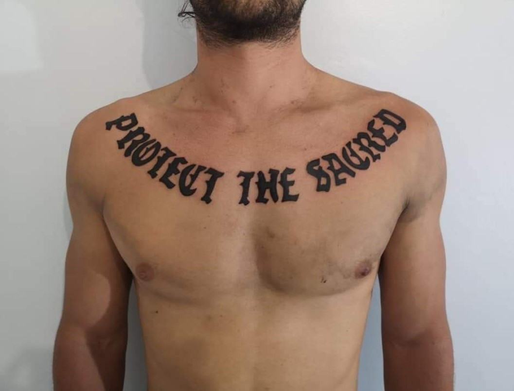
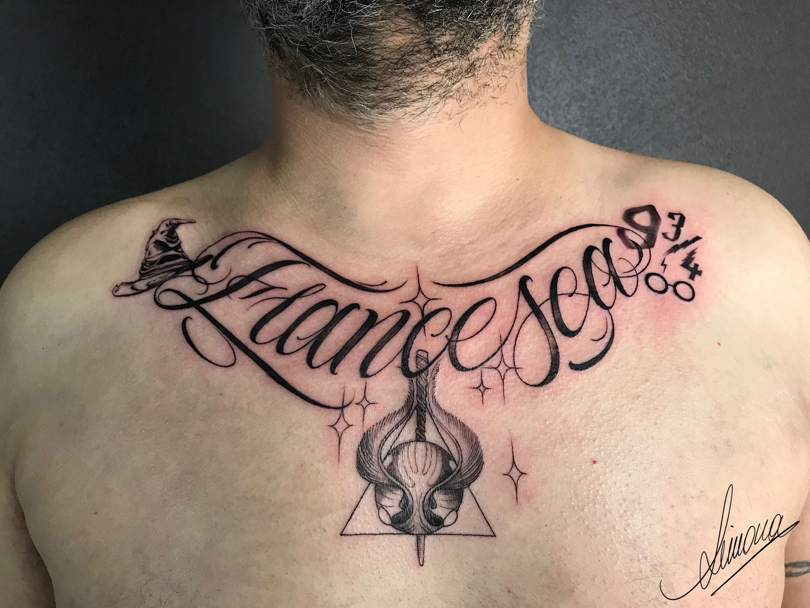
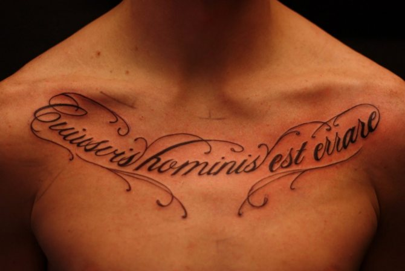
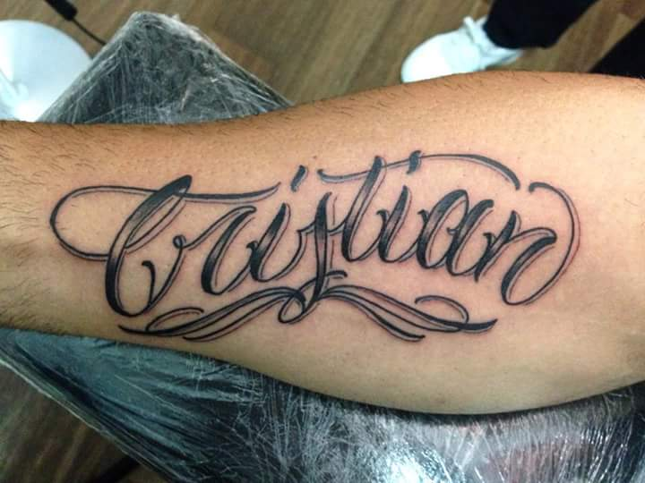
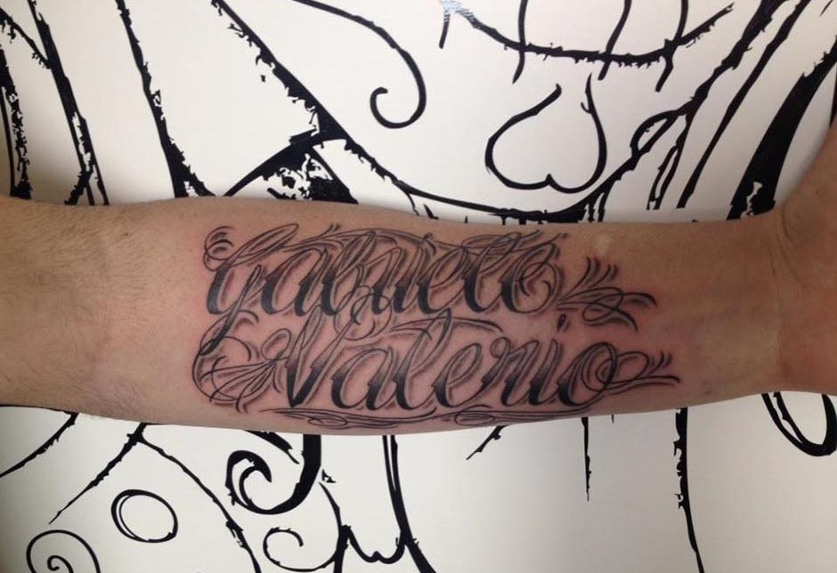
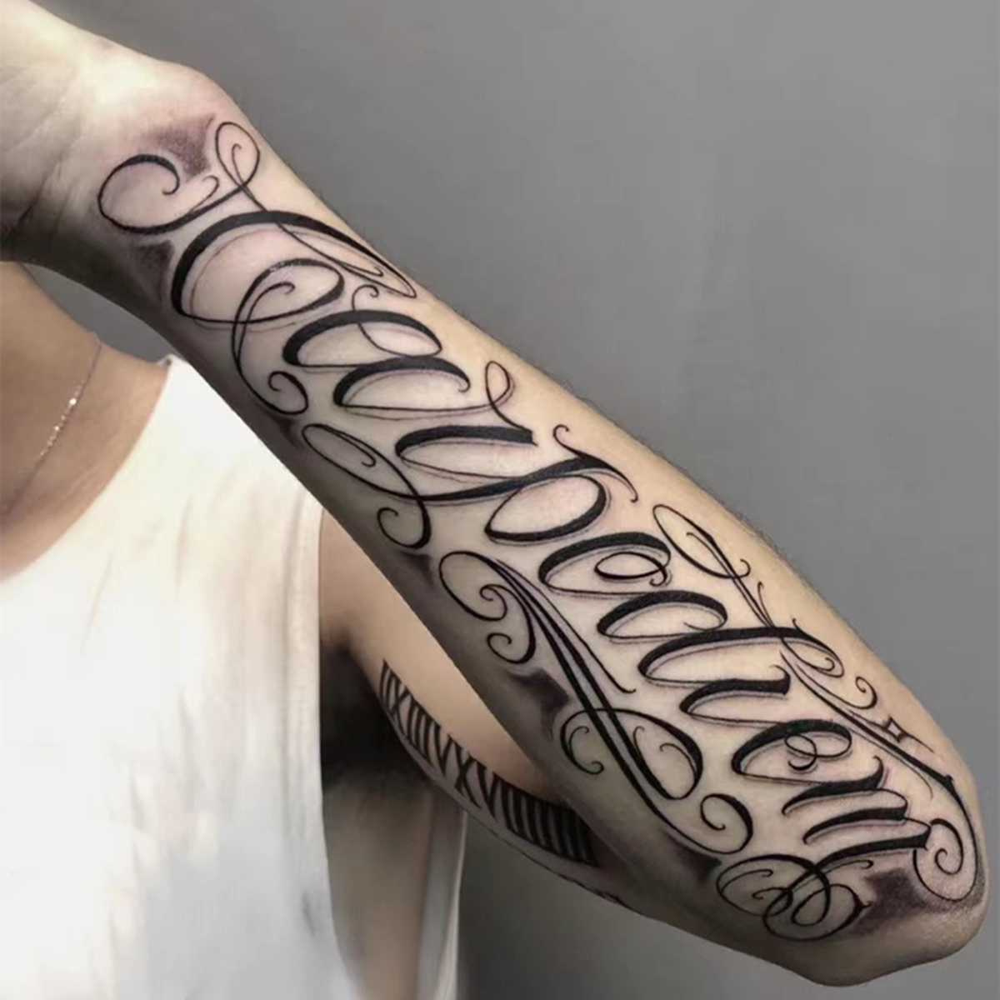
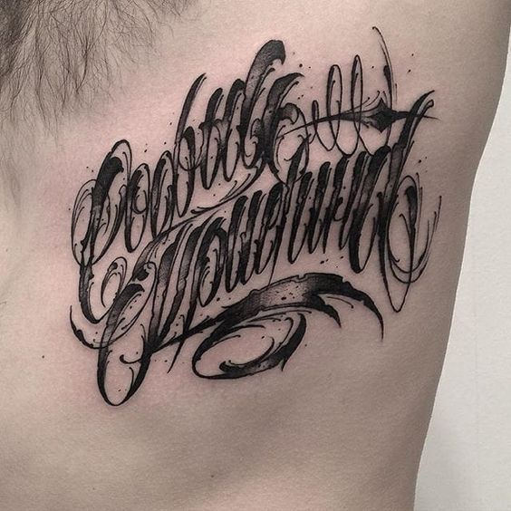
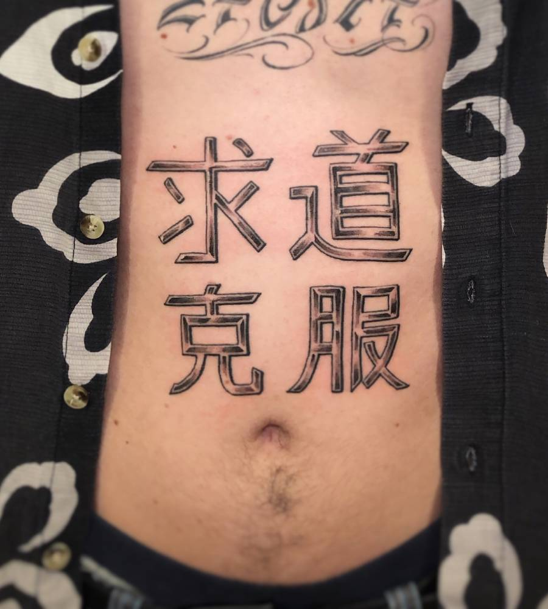
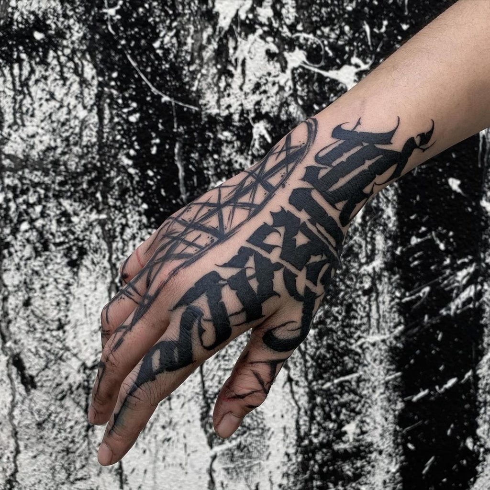

Lettering
Stile
Uno degli stili di tatuaggi più famosi è proprio il Lettering: un Tattoo che si esprime a parole! Sviluppatosi già ai tempi dell’old school, lo stile del Lettering rappresentava lo strumento di supporto all’iconografia del tatuaggio.
Successivamente, il Lettering è diventato un vero proprio stile a sé che riesce a trasmettere tramite le parole i sentimenti di una persona.
Photogallery








